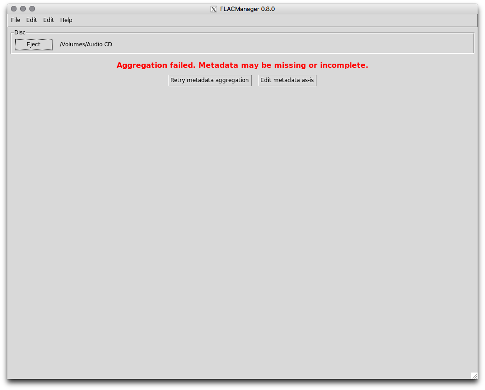
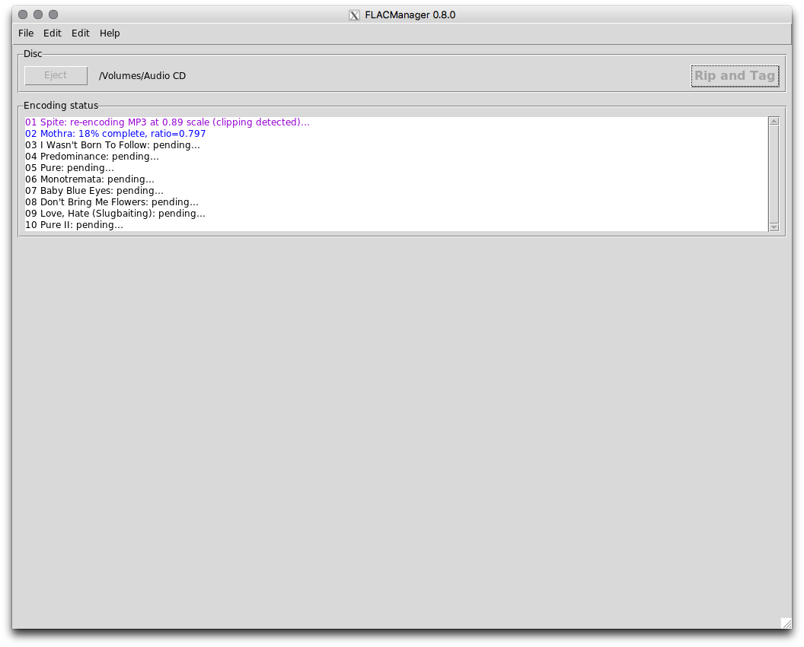

Using FLACManager¶
| Release: | 0.8.1 |
|---|
Configuring FLACManager¶
FLACManager depends on a configuration file, flacmanager.ini, which resides alongside the flacmanager.py script in the file system.
If flacmanager.ini does not exist when FLACManager is run (e.g. on the first run), it will be created with default/empty values. In this case, FLACManager will not allow you to proceed until you provide several required configuration values:
The default configuration looks like this:
[FLACManager]
__version__ = 0.8.1
title = FLACManager ${__version__}
[UI]
minwidth = 1024
minheight = 768
padx = 7
pady = 5
disable_editing_excluded_tracks = no
encoding_max_visible_tracks = 29
[Logging]
level = WARNING
filename = flacmanager.log
filemode = w
format = %(asctime)s %(levelname)s [%(threadName)s %(name)s.%(funcName)s] %(message)s
[HTTP]
debuglevel = 0
timeout = 5.0
[Gracenote]
client_id =
user_id =
[MusicBrainz]
contact_url_or_email =
libdiscid_location =
[Organize]
library_root =
library_subroot_trie_key = album_artist
library_subroot_compilation_trie_key = album_title
library_subroot_trie_level = 1
trie_ignore_leading_article = a an the
album_folder = {album_artist}/{album_title}
ndisc_album_folder = ${album_folder}
compilation_album_folder = {album_title}
ndisc_compilation_album_folder = ${compilation_album_folder}
track_filename = {track_number:02d} {track_title}
ndisc_track_filename = {album_discnumber:02d}-${track_filename}
compilation_track_filename = ${track_filename} ({track_artist})
ndisc_compilation_track_filename = {album_discnumber:02d}-${compilation_track_filename}
use_xplatform_safe_names = yes
save_cover_image = yes
[FLAC]
library_root = ${Organize:library_root}/FLAC
library_subroot_trie_key = ${Organize:library_subroot_trie_key}
library_subroot_compilation_trie_key = ${Organize:library_subroot_compilation_trie_key}
library_subroot_trie_level = ${Organize:library_subroot_trie_level}
trie_ignore_leading_article = ${Organize:trie_ignore_leading_article}
album_folder = ${Organize:album_folder}
ndisc_album_folder = ${Organize:ndisc_album_folder}
compilation_album_folder = ${Organize:compilation_album_folder}
ndisc_compilation_album_folder = ${Organize:ndisc_compilation_album_folder}
track_filename = ${Organize:track_filename}
ndisc_track_filename = ${Organize:ndisc_track_filename}
compilation_track_filename = ${Organize:compilation_track_filename}
ndisc_compilation_track_filename = ${Organize:ndisc_compilation_track_filename}
track_fileext = .flac
use_xplatform_safe_names = ${Organize:use_xplatform_safe_names}
save_cover_image = ${Organize:save_cover_image}
flac_encode_options = --force --keep-foreign-metadata --verify
flac_decode_options = --force
[Vorbis]
ALBUM = album_title
ALBUMARTIST = album_artist
ORGANIZATION = album_label
LABEL = ${ORGANIZATION}
DISCNUMBER = {album_discnumber:d}
DISCTOTAL = {album_disctotal:d}
TRACKNUMBER = {track_number:d}
TRACKTOTAL = {album_tracktotal:d}
TITLE = track_title
ARTIST = track_artist
GENRE = track_genre
DATE = track_year
COMPILATION = {album_compilation:d}
[MP3]
library_root = ${Organize:library_root}/MP3
library_subroot_trie_key = ${Organize:library_subroot_trie_key}
library_subroot_compilation_trie_key = ${Organize:library_subroot_compilation_trie_key}
library_subroot_trie_level = ${Organize:library_subroot_trie_level}
trie_ignore_leading_article = ${Organize:trie_ignore_leading_article}
album_folder = ${Organize:album_folder}
ndisc_album_folder = ${Organize:ndisc_album_folder}
compilation_album_folder = ${Organize:compilation_album_folder}
ndisc_compilation_album_folder = ${Organize:ndisc_compilation_album_folder}
track_filename = ${Organize:track_filename}
ndisc_track_filename = ${Organize:ndisc_track_filename}
compilation_track_filename = ${Organize:compilation_track_filename}
ndisc_compilation_track_filename = ${Organize:ndisc_compilation_track_filename}
track_fileext = .mp3
use_xplatform_safe_names = ${Organize:use_xplatform_safe_names}
save_cover_image = ${Organize:save_cover_image}
lame_encode_options = --clipdetect -q 2 -V2 -b 224
[ID3v2]
TALB = album_title
TPE2 = album_artist
TPUB = album_label
TPOS = {album_discnumber:d}/{album_disctotal:d}
TRCK = {track_number:d}/{album_tracktotal:d}
TIT2 = track_title
TIT1 = ${TPE1}
TPE1 = track_artist
TCON = track_genre
TYER = track_year
TDRC = ${TYER}
TCMP = {album_compilation:d}
You must provide values for your music library_root directory; the Gracenote client_id; and MusicBrainz contact_url_or_email and libdiscid_location. All other configuration settings may be left as-is or changed to your preferences.
To obtain a Gracenote client_id, you must register for a Gracenote Developer account and create an application (you can call it “FLACManager”). Copy the Client ID for the created application and paste it into the flacmanager.ini file. FLACManager will take care of registering the application and persisting the user_id for you.
Running FLACManager¶
When you launch FLACManager (assuming you have already created/populated the flacmanager.ini file with valid values), it looks for an inserted CD-DA disc:
FLACManager is polling your optical drive in the background, and will continue to do so until it detects that a disc has been inserted.
Once a disc has been detected, FLACManager begins aggregating metadata from Gracenote and MusicBrainz:

You can abort the aggregation process by ejecting the disc.
If aggregation fails, an error dialog will describe the failure. Once this dialog is dismissed, you will be presented with options to either retry the metadata aggregation or edit the metadata as-is:
Warning
If you choose to edit the metadata as-is, the editor may not contain all aggregated metadata (or any at all).
If metadata aggregation completes successfully, you will be presented with the editor interface prepopulated with the aggregated metadata values:
Here you can select from the aggregated metadata values or enter your own. Some fields present the option to “Apply to all tracks,” which does exactly as it suggests - copies the current value to the corresponding field of every track.
By default, all tracks are “included,” which means they will be ripped to FLAC and MP3. To exclude a track, simply uncheck the box.
New in version 0.8.1: You can now change the folder/file naming templates for the current album directly from the UI. If you specify templates that differ from the defaults (defined in flacmanager.ini), then those custom naming templates will be included in the persisted metadata for this album.
New in version 0.8.0: Custom Vorbis comments and ID3v2 tags may be added at the album or track level.
A custom comment/tag added at the album level will be copied to all tracks. If it is later deleted from the album level, it will also be deleted from all tracks unless the value was changed for a particular track (in which case the custom comment/tag will remain for that track only).
Note
Custom comments/tags at the album level cannot be modified once created; they must be deleted and re-added to change the value.
When you are satisfied with the metadata values, click the “Rip and tag” button to begin the encoding process:
As soon as the “Rip and tag” button is clicked to begin the encoding process, all album and track metadata field values are automatically saved. If ripping fails for any reason, re-inserting the disc will cause that persisted metadata to be restored so that you don’t have to re-enter the information by hand. If a cover image was persisted, it will be opened in Preview automatically when the metadata is restored.
Once all included tracks have been encoded to FLAC and MP3, the “Eject” button is enabled and you can eject the disc. FLACManager then waits for another disc to be inserted.
Mapping FLACManager metadata fields to iTunes and Google Play Music¶
This table describes how FLACManager maps metadata fields† to iTunes and Google Play Music in the default configuration:
| FLACManager UI Editor | FLACManager UI Field | FLACManager metadata key | FLAC Vorbis comment | MP3 ID3v2 tag | iTunes field | Google Play Music field |
|---|---|---|---|---|---|---|
| Album | Title | album_title | ALBUM | TALB | album | Album |
| Disc | album_discnumber | DISCNUMBER | TPOS | disc number | Disc # | |
| album_disctotal | DISCTOTAL | TPOS | disc number of | Discs | ||
| Compilation | album_compilation | COMPILATION | TCMP | compilation | ||
| Artist | album_artist | ALBUMARTIST | TPE2 | album artist | Album Artist | |
| Label | album_label | ORGANIZATION, LABEL | TPUB | |||
| Genre | album_genre | |||||
| Year | album_year | |||||
| Cover | album_cover | METADATA_BLOCK_PICTURE | APIC | Artwork | (image) | |
| Track | Track | track_number | TRACKNUMBER | TRCK | track | Track # |
| track_total | TRACKTOTAL | TRCK | track of | Tracks | ||
| Include | track_include | |||||
| Title | track_title | TITLE | TIT2 | song name | Name | |
| Artist | track_artist | ARTIST | TIT1, TPE1 | artist | Artist | |
| Genre | track_genre | GENRE | TCON | genre | Genre | |
| Year | track_year | DATE | TYER, TDRC | year | Year |
† if FLACManager finds a barcode for the disc in the aggregated metadata (MusicBrainz includes this value when it is known), then a custom Vorbis “BARCODE” comment is added at the album level and copied to all tracks